Harvest the Best, Nourish Your Life
Pure, wholesome, and straight from the land to your table.
Hello, I’m James Fletcher, a farmer with a deep passion for
sustainable agriculture. For years, I’ve been dedicated to
growing food that fuels healthier lives and stronger
communities.
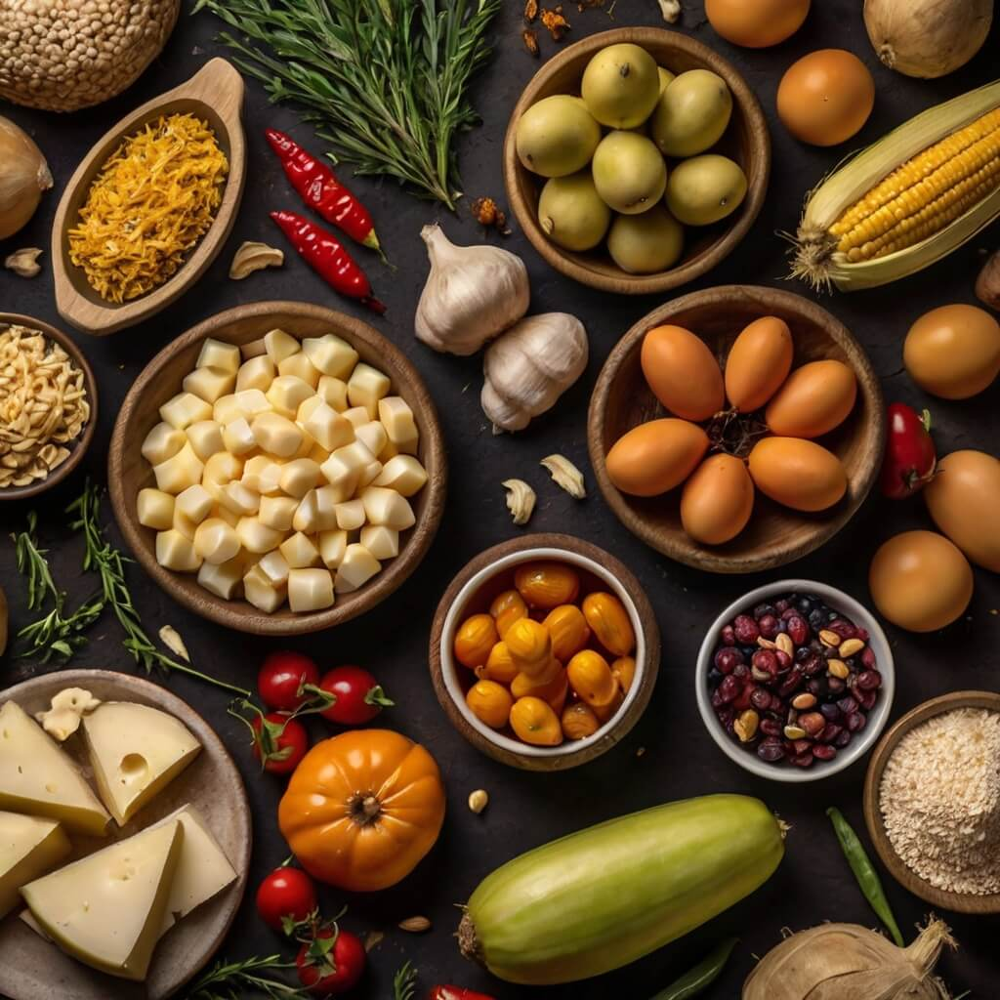
Every crop we grow and every product we craft carries the heart of
our farm. Whether you seek natural goodness or a deeper connection
to the land, we bring the best straight to you. From the
sun-kissed fields to your home, our produce is carefully selected
and delivered to ensure maximum freshness and flavor. Experience
the difference of farm-to-table goodness.
our fresh selections
Bringing people closer to nature, one harvest at a time.
Farm-to-Table Excellence
From sun-kissed fields to your home, we cultivate and
deliver the finest farm products. Our dedication to
quality and sustainability ensures every bite is packed
with nutrition and flavor. Experience the power of
farm-to-table goodness and discover a healthier, more
fulfilling way to nourish your body and soul.
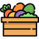
A Passion for the Land
Step into a world where farming meets heart and hard work.
Taste the difference of naturally grown produce, cared for
with dedication and love. Our commitment to sustainable
agriculture ensures that every product not only nourishes
your body but also supports a healthier planet. Join us in
celebrating a lifestyle where every meal is a testament to
the harmony between nature and nurture.
Cultivated for Quality
At RusticRoots, we go beyond farming—we nurture life. Our
innovative methods and hands-on care ensure that
everything we produce is of the highest standard. We are
committed to sustainable practices that protect the earth
and promote biodiversity. Our dedicated team works
tirelessly to bring you the freshest produce, rich in
nutrients and bursting with natural flavor. Join us on a
journey towards a healthier lifestyle and a more
sustainable future.
Who We Are
RusticRoots is more than a farm—it’s a commitment to fresh, natural, and responsibly grown food.
Join our community of farm lovers who believe in the power
of wholesome food. From our fields to your kitchen, we bring
you closer to the land and the nourishment it provides.
★
Seasonal Produce Selections
★
Expertly Grown, Naturally Fresh
★
Sustainable and Ethical Farming
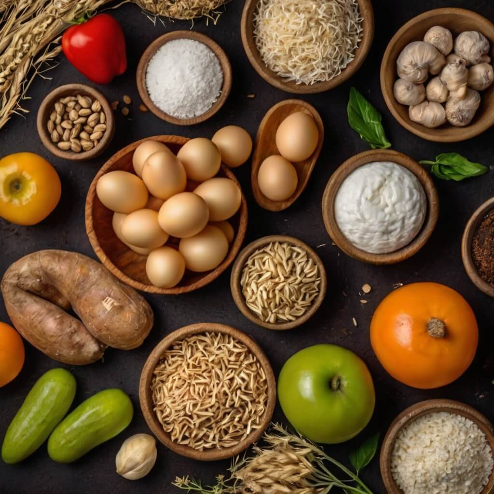
Farm-to-Table Process
From Our Fields to Your Plate in 3 Simple Steps
1
Grow with Care
Our farmers nurture crops using organic methods, ensuring the
highest quality produce. We prioritize soil health,
biodiversity, and natural pest control, avoiding synthetic
chemicals. Every seed is carefully selected to thrive in our
environment, producing nutrient-rich food for you.
2
Harvest at Peak
We pick our produce at the perfect time to maximize flavor and
nutrition. Our team monitors growth stages daily, ensuring
each fruit and vegetable reaches optimal ripeness.
Hand-harvested with care, our crops retain their natural
taste, aroma, and beneficial properties.
3
Deliver Fresh
Your order arrives at your doorstep within 48 hours of
harvest, ensuring ultimate freshness. We use eco-friendly
packaging to maintain quality while reducing environmental
impact. From our farm to your table, we guarantee farm-to-fork
transparency and a commitment to freshness.
Our Farm Gallery
Explore the Beauty of RusticRoots
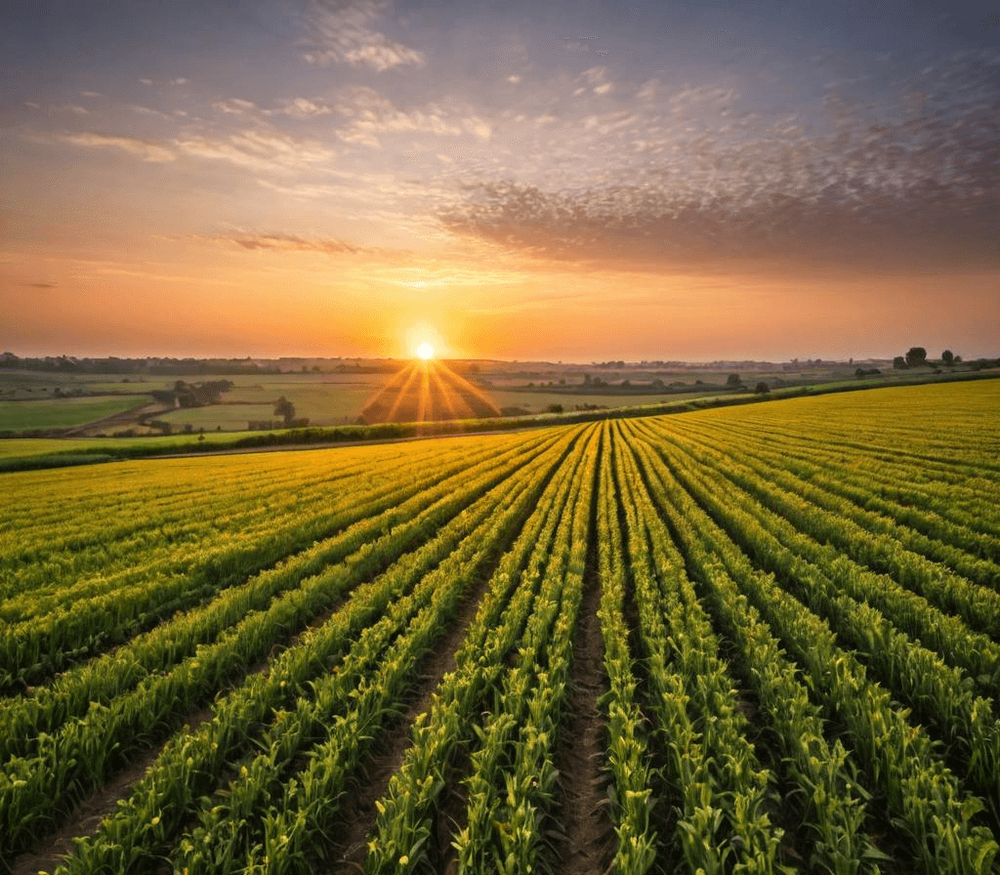
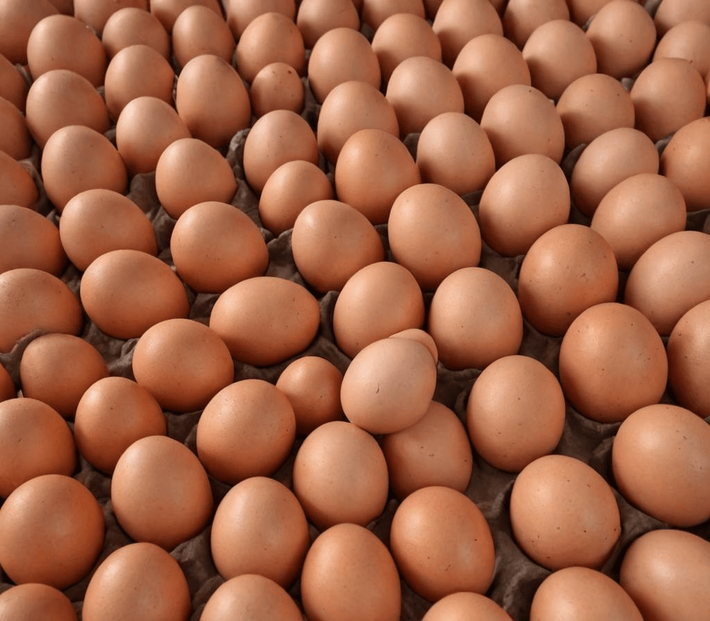
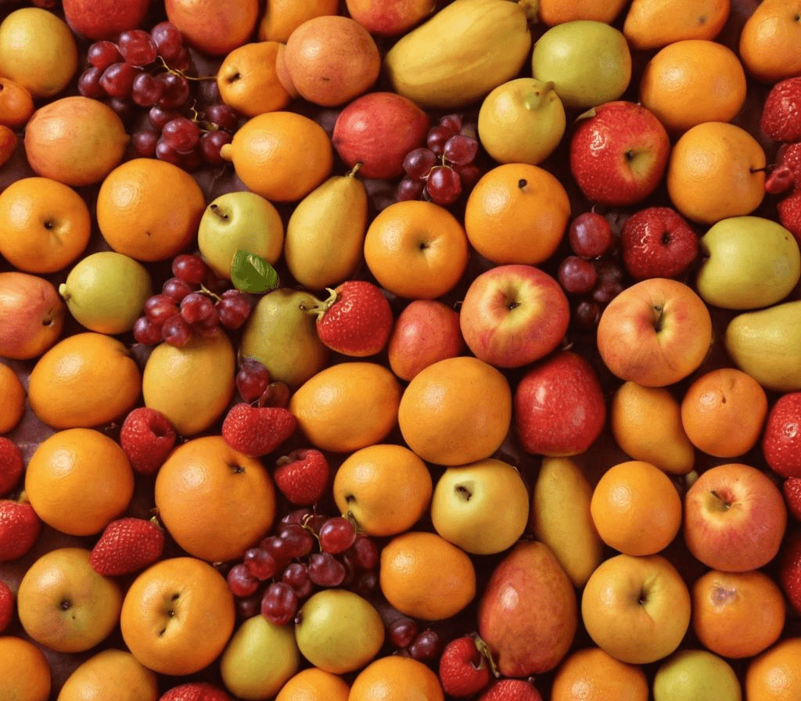
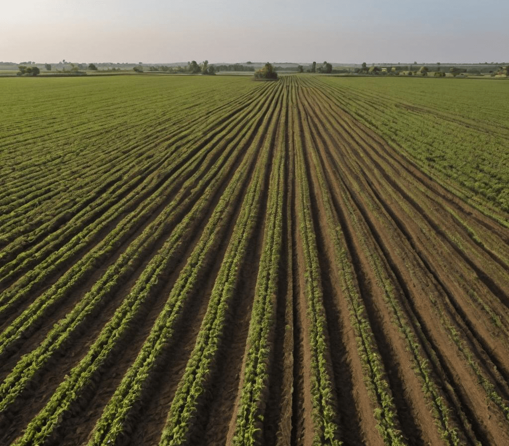
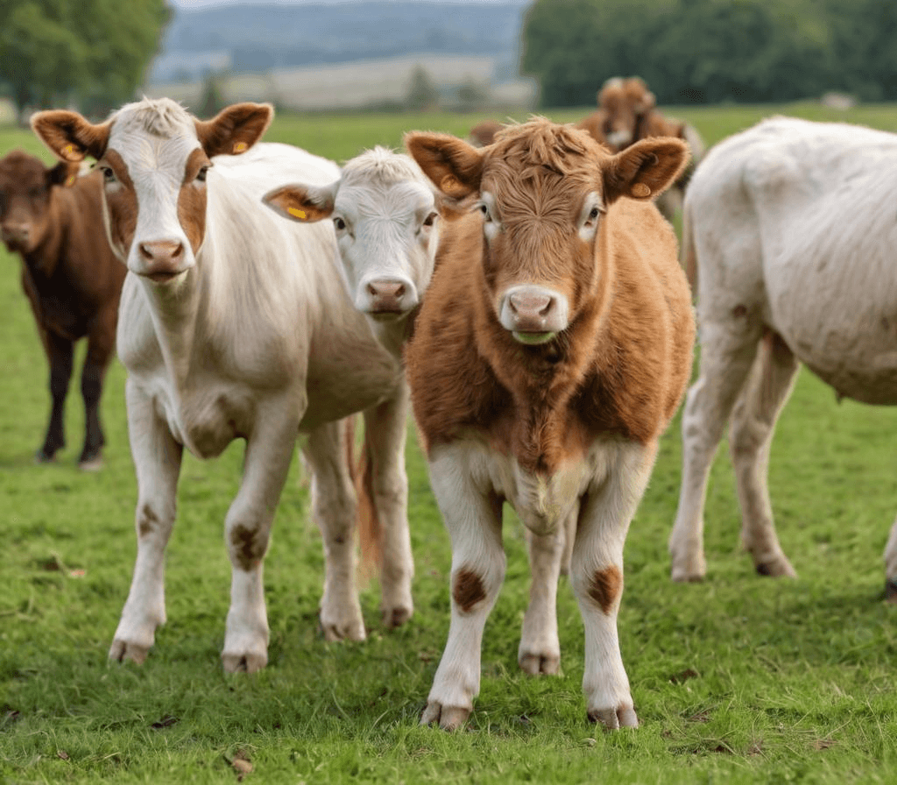
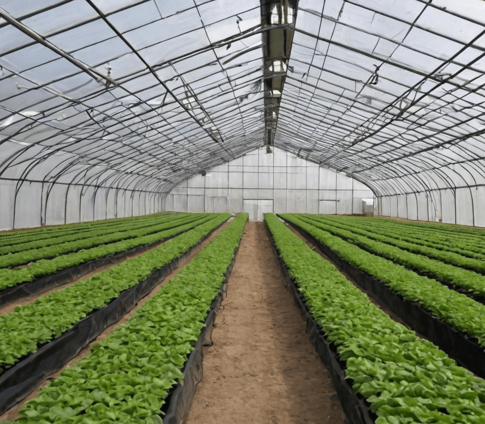
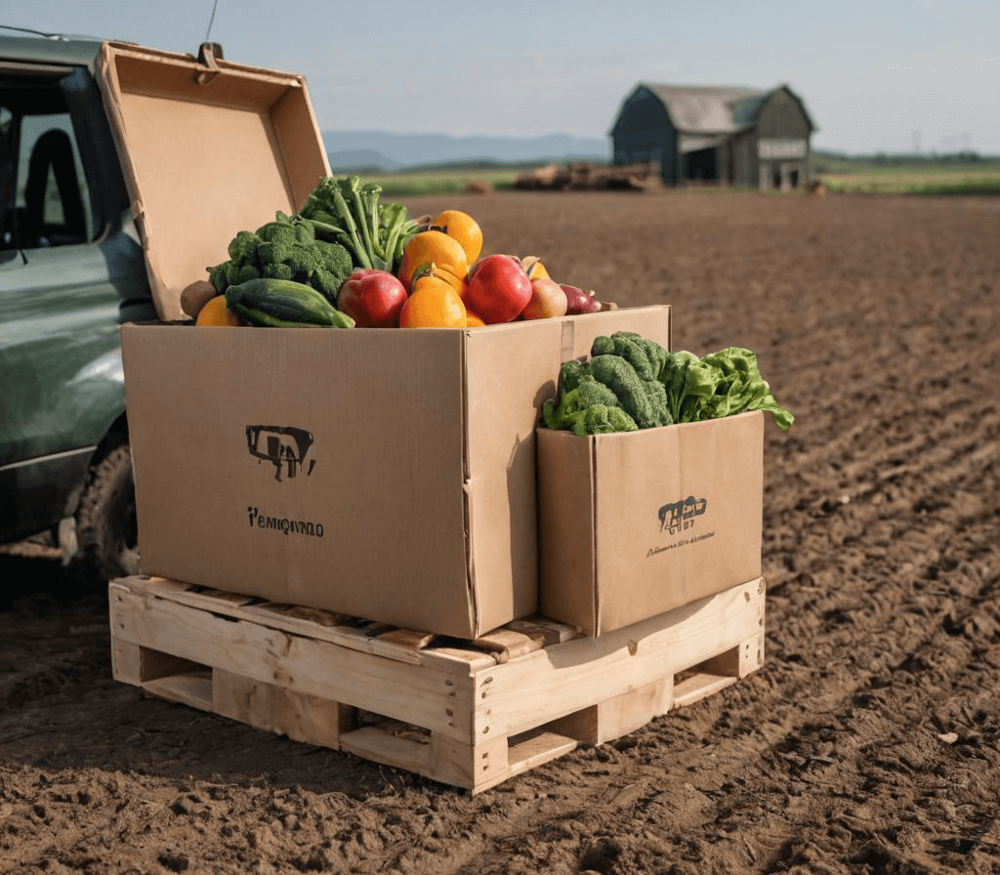
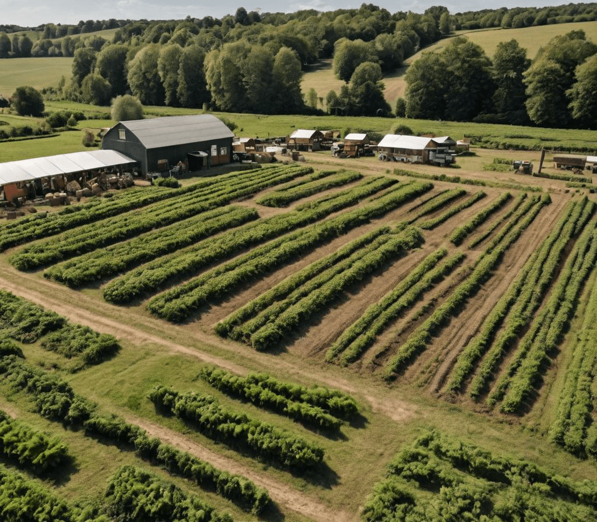
Real Stories, Real Impact
See how our farm has changed lives.
RusticRoots has transformed how I eat and shop. I trust their
food to be fresh, healthy, and full of flavor! With their
farm-to-table approach, I know I'm getting the best possible
ingredients for my family and me. We're hooked on their seasonal
produce and farm-fresh meats!
9,954+
Happy customers
20+
Farm-grown products
I never imagined farm-fresh goodness could taste this
incredible, but RusticRoots has redefined what natural food
truly means. Their commitment to quality and sustainability is
evident in every bite. With RusticRoots, I'm confident that I'm
nourishing my family with the purest ingredients. It's not just
food; it's a lifestyle that celebrates the essence of nature's
bounty.